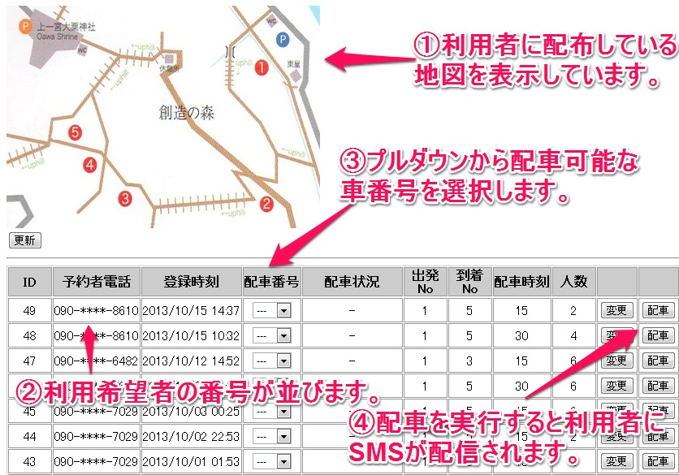

略称「おまどこ」とは
クラウディアさん演じる「まど子さん」による自動配車システムです。電話をかけるとイベント地域を巡回している登録ドライバーが迎えに来てくれます。
フライヤーに掲載している地図で現在位置を確認した上で、携帯電話から電話をかけていただき、希望する乗車場所と降車場所、人数、何分後に配車を希望するかをダイアルしてください。
ご入力いただいた乗車希望をスタッフが確認した後に、速やかにSMSでご連絡いたします。
※注：現在はデモ用にカスタマイズしたものを公開しています。SMSが届いても実際には来てくれませんのでご注意ください。
つかいかた
1. イベントで配布された（という体の） フライヤーを見ながら今いる場所と次に行きたい場所の番号を見つけます。
2. 携帯電話から050-3154-0164 に電話をかけてください。
3. まど子さんの音声案内に従って、移動経路の番号、乗車人数、配車希望時間をプッシュしてください。
4. しばらくすると予約確認メール(SMS)が届きます。メール文面の配車予定時間をご確認ください。
事務局側のつかいかた（管理画面）
1. ブラウザから管理画面にアクセスしてください。
2. 新着順に並んでいる配車依頼を確認(②)し、配車可能な車をプルダウンから選択(③)します。
3. 配車状況に応じて利用者に連絡する時刻を遅らせるなど、必要に応じて依頼内容を変更します。
4. 「配車」ボタンを押すと配車情報が登録され、利用者にはSMSで連絡が飛びます。
※注：管理画面もデモ用です。配車操作をするにはID / Passが必要です。
